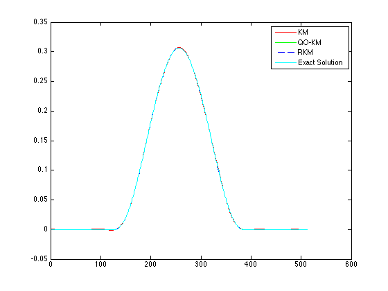
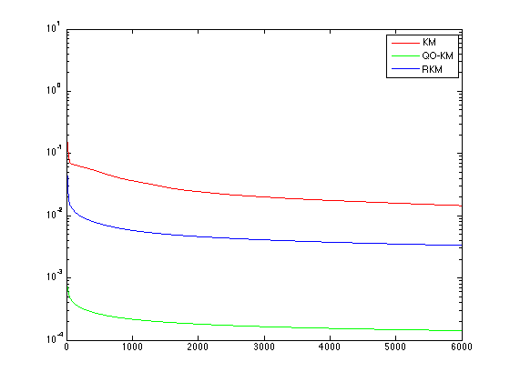

Convergence of the Quasi-Optimal Kaczmarz algorithm.
Demonstrates the change in the rate of convergence of the Quasi-Optimal Kaczmarz algorithm (awaiting publication).
Contents
Author & Reference
Ivanov Andrey, Graduate student, ssauivanov@gmail.com.
Dept. of Applied Mathematics, S. P. Korolyov Samara State Aerospace University (National Research University), Faculty of Computer Science, Samara, Russia.
- [1] A. I. Zhdanov, The method of augmented regularized normal equations, Computational Math- ematics and Mathematical Physics, 52 (2012), pp. 194-197.
- [2] T. Strohmer and R. Vershynin, A randomized Kaczmarz algorithm for linear systems with exponential convergence, J. Fourier Analysis and Applications, 15 (2009), pp. 262-278.
- [3] A.A. Ivanov and A.I. Zhdanov, On a modification of the iterative Kaczmarz algorithm, Abstracts of Conference Matematicheskoe Modelirovanie i Kraevye Zadachi (Mathematical modeling and boundary value problems), MMIKZ-2010, Vol.4, pp.75-77 (In Russian), http://matmod.ucoz.ru/2010/maket4.pdf
See more for Regularization Tools dependency
- [4] P.C. Hansen, Regularization Tools Version 4.1 (for MATLAB Version 7.3), http://www2.imm.dtu.dk/~pcha/Regutools/
addpath ('../libs/regu/');
See more for AIRTools dependency
- [5] P.C. Hansen, A MATLAB Package of Algebraic Iterative Reconstruction Methods (for Matlab Version 7.8 or later), http://www2.imm.dtu.dk/~pcha/AIRtools/
addpath ('../libs/AIRtools/AIRtools/');
Generate test problem
Discretization of the "famous" Fredholm integral equation of the frst kind deviced by D. L. Phillips, see more in [6].
[A,f,u_true] = phillips(512); [m,n] = size(A); N = [1:1:6000];
Execute the Kaczmarz (KM) alg
[x0 info0] = kaczmarz(A,f,N); error_x0 = zeros(1,size(x0,2)); for i = 1:1:length(error_x0) error_x0(i) = norm(x0(:,i)-u_true,2); end;
Execute the Randomized Kaczmarz (RKM) alg
[x2 info2] = randkaczmarz(A,f,N); error_x2 = zeros(1,size(x0,2)); for i = 1:1:length(error_x0) error_x2(i) = norm(x2(:,i)-u_true,2); end; options.stoprule.type = 'NR'; options.stoprule.epsilon = 10^-8;
Execute the QO-Kaczmarz (QO-KM) alg.
[x1 info1] = qoptimalkaczmarz(A,f,N,[],options); error_x1 = zeros(1,size(x1,2)); for i = 1:1:length(error_x1) error_x1(i) = norm(x1(:,i)-u_true,2); end;
Plot the results
Compare solutions
figure; plot(1:1:length(x0(:,end)), x0(:,end), 'r', ... 1:1:length(x1(:,end)), x1(:,end), 'g', ... 1:1:length(x2(:,end)), x2(:,end), 'b--', ... 1:1:length(u_true) , u_true , 'c'); legend('KM', ... 'QO-KM', ... 'RKM', ... 'Exact Solution');
Compare convergence rate
figure; semilogy (1:1:length(error_x0), error_x0, 'r',... 1:1:length(error_x1), error_x1, 'g', ... 1:1:length(error_x2), error_x2, 'b'); legend('KM', ... 'QO-KM', ... 'RKM');